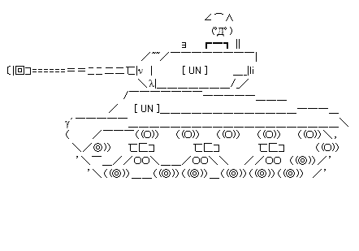
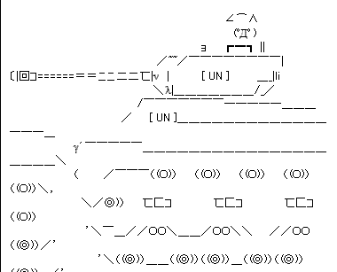

このページは、H-man AND NOWのコンテンツ、アスキーアートガイドラインの捕捉となっております。
objectタグの利用法
注意事項その１ですが、ドキュメントの途中にある、プレーンテキストとして公開するの項ですが、これを使用する場合には、ブラウザの実装の関係で、type属性に、下の様にcharset宣言を必要とします。
メールしようとしたのですが、メールアドレスが死んでいるのか送信できませんでしたので、一応ココで捕捉。
つまり、文字コード指定を追加して
<object data="hung.txt" type="text/plain;charset=UTF-8">
<a href="hung.txt">吊って来まーす</a>
</object>
こうすると、objectタグ内で指定したテキストデータを処理できないと判断して
と、変わりにＡＡへのリンクが表示されます。そもそも目的のＡＡ自体が表示されないので、現在の所は使い物にならないのですが…。
preタグでの利用法
次にpreタグですが
|| ∧||∧ （ / ⌒ヽ | | | ∪ / ノ | ｜| ∪∪ ； -━━- 吊って来まーす
図の様に、2ch中心に、アスキーアートは等幅フォントを基本に作るられているので、preタグのフォントも等幅フォントを指定します。
Windowsでお勧めはMS UI Gothic。Mac環境を探して見ると、プロポーショナルフォントと等幅フォントを見る限り、全部等幅フォントで表示するのは厳しいようですので、これはＡＡを製作する段階で全て２バイト文字で作るように、注意して頂くしか無いようですね。
ちなみにWindows環境でのline-heightは1.2で指定されているようなので、これも考えてpreタグにスタイルシートを指定するときは
pre {
font-family:"MS UI Gothic","Osaka",monospace;
line-height:1.2;
}
としておくのが良いと思われます(表示がWindowsに近くなるので)。最後にmonospaceを付けているのは、指定したフォントがどれも存在しない場合、最後にユーサーエージェントが持っているフォントから、等幅の物を選んでもらうためで、良く付け忘れられていますが、必ず指定しなければなりません。
Linux界隈では、どのフォントがよく使われているのか良く知らないので、今回は、フォント名の指定をしないでおきました。
なんでこんな事書いたかというと
なんでこんな物書いているかというと、ニュースサイトさん等で、サイトによっては盛んにＡＡを使用されているのですが、大きめの物を張ったりすると、場合によってはＡＡが改行してしまって
|  |  |
と表示がおかしくなるので…、自分の所以外では不具合が起こっていることを分かって欲しいな〜と。出来ればエディター更新の人には使って欲しいな〜、と。以上です。
最後に、ＡＡはぷーにゃ's MUSEUMから拝借しました。